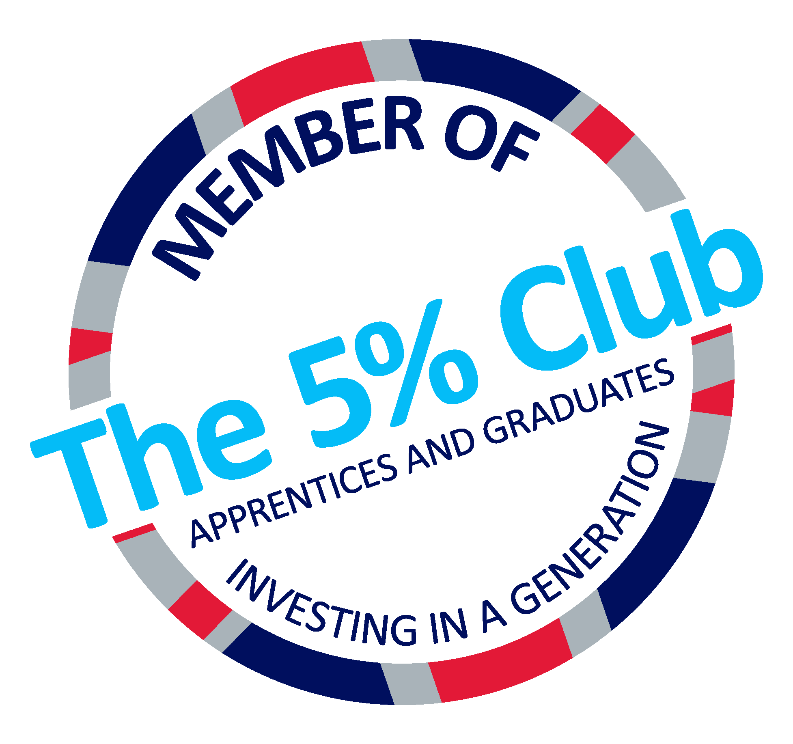

Building a bridge between talent and opportunity
The Apprenticeship Talent Bridge is a project by The 5% Club in collaboration with Workplus, funded by Ufi VocTech Trust and the ERA Foundation.
Talent shouldn’t be lost because opportunity can’t be seen
Every year, major employers turn away capable apprenticeship applicants simply because they have more strong candidates than places. Many of those young people never find out about the excellent apprenticeships available just down the road.
At the same time, smaller and local employers — including many in large employers’ supply chains — tell us they struggle to attract the people and skills they need.
The Apprenticeship Talent Bridge connects the two. With candidates’ consent, it gives applicants a positive onward route and gives employers a new way to reach people who may not yet know their organisation.
- A time-bound, coordinated recruitment campaign
- Genuine apprenticeship opportunities prepared before candidates apply
- No participation fee for employers or learning providers
- Delivered on the Workplus platform
Three pilot areas, two local approaches
The pilot is developed and delivered by The 5% Club in partnership with BAE Systems and Babcock.
Barrow-in-Furness
Looking across the wider local employer community — not only existing supply-chain businesses.
Preston
Looking across the wider local employer community — not only existing supply-chain businesses.
Devonport
A particular focus on Babcock’s wider supply chain and the local skills base.
Partners and funders

The 5% Club · Project lead
An employer-led membership organisation whose members aspire to have at least 5% of their UK workforce in “earn and learn” positions — apprentices, sponsored students and graduates on formal programmes. The 5% Club develops and delivers the Apprenticeship Talent Bridge.
Visit The 5% Club ↗
Workplus · Platform partner
The digital platform behind the Apprenticeship Talent Bridge. Employers and learning providers register their interest on Workplus, and candidates create their profile and apply to approved opportunities there.
Apprenticeship Talent Bridge on Workplus ↗
Ufi VocTech Trust · Funder
A charity that funds the use of digital technology to improve vocational skills and learning for work. Ufi’s grant funding supports the development of the Apprenticeship Talent Bridge.
Visit Ufi VocTech Trust ↗
ERA Foundation · Funder
An independent charity supporting engineering skills in the UK. The ERA Foundation’s grant funding supports the development of the Apprenticeship Talent Bridge.
Visit the ERA Foundation ↗